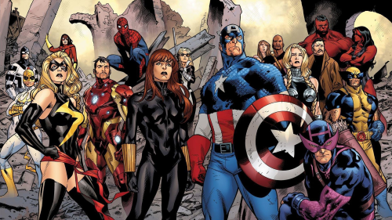
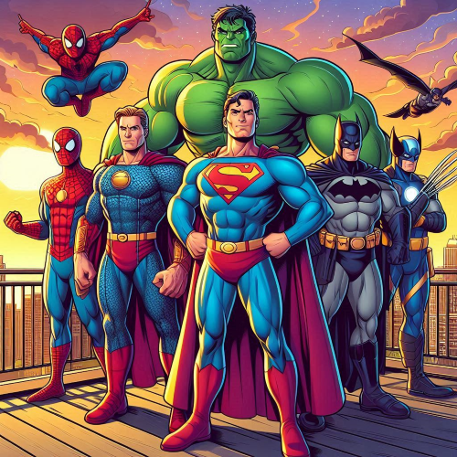

Actualidad en línea
HISTORIA DE LOS COMICS

Introducción a la Historia
de los Cómics Americanos
La historia de los cómics americanos es una narrativa rica y compleja que refleja la evolución cultural y social de los Estados Unidos a lo largo de más de un siglo. Desde sus inicios como tiras cómicas en los periódicos a finales del siglo XIX, los cómics han crecido para convertirse en una poderosa forma de arte y un medio de entretenimiento masivo.
Orígenes y Primeros Años: Los cómics comenzaron a ganar popularidad a fines del siglo XIX con tiras cómicas como "The Yellow Kid". Estas primeras tiras fueron una forma innovadora de narración visual que rápidamente capturó la imaginación del público.
Edad de Oro (1938-1950s): La publicación de "Action Comics #1" en 1938, que introdujo al mundo a Superman, marcó el comienzo de la Edad de Oro de los cómics. Este período vio el nacimiento de muchos de los superhéroes más icónicos, como Batman, Wonder Woman y Capitán América, quienes se convirtieron en símbolos culturales durante la Segunda Guerra Mundial.
Edad de Plata (1956-1970): En la década de 1950, los superhéroes experimentaron un renacimiento con personajes reinventados y nuevos héroes como Flash y los Cuatro Fantásticos. Esta era se caracterizó por la creatividad y la expansión del universo de superhéroes, con Marvel Comics emergiendo como un importante competidor de DC Comics.
Edad de Bronce (1970-1985): Durante la Edad de Bronce, los cómics comenzaron a abordar temas sociales más oscuros y maduros, reflejando las cambiantes actitudes culturales de la época. Historias que trataban el racismo, la pobreza y el abuso de drogas se hicieron más comunes.

Edad Moderna (1985-presente): La Edad Moderna de los cómics se caracteriza por la diversificación de géneros y estilos, así como por el aumento en la popularidad de las adaptaciones cinematográficas y televisivas de los cómics. Obras influyentes como "Watchmen" y "The Dark Knight Returns" redefinieron lo que los cómics podían ser, mientras que el surgimiento del Universo Cinematográfico de Marvel llevó a los superhéroes a una audiencia global.
A lo largo de su historia, los cómics americanos han sido más que simples historias de aventuras; han servido como un espejo de la sociedad, abordando problemas contemporáneos y reflejando los cambios en la cultura y los valores. Desde los periódicos hasta las pantallas de cine, los cómics han dejado una huella indeleble en el mundo del entretenimiento y la cultura pop.
En esta página hablaremos sobre algunos superhéroes donde recorreremos su historia y sus principales aventuras.
Héroes del Mes
Spider-Man: Su reciente historia en los cómics y películas ha resaltado su crecimiento y valentía.
Wonder Woman: Su lucha por la igualdad y su papel en el universo DC siguen inspirando a muchos.
Hulk: Su compleja dualidad y su papel en la última serie de cómics y películas siguen capturando la imaginación de los fans.
Este mes, Spider-Man, Wonder Woman y Hulk destacan como héroes por su impacto reciente. Spider-Man sigue evolucionando con nuevas historias emocionantes; Wonder Woman continúa siendo un símbolo de empoderamiento y justicia; y Hulk mantiene su relevancia con su compleja dualidad y su papel destacado en los cómics y películas actuales. Cada uno, a su manera, representa ideales de valentía y lucha por un mundo mejor.